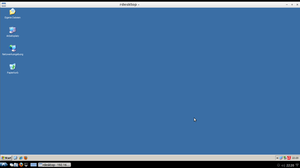

rdesktop
Dieser Artikel wurde für die folgenden Ubuntu-Versionen getestet:
Ubuntu 16.04 Xenial Xerus
Ubuntu 14.04 Trusty Tahr
Zum Verständnis dieses Artikels sind folgende Seiten hilfreich:
rdesktop  ist ein Open-Source-Client für die Remotedesktop-Dienste von Windows (früher auch als "Terminal Services" bezeichnet). Durch Nutzung dieses Programms ist es möglich, im lokalen Netzwerk oder von unterwegs via UMTS und einer VPN-Verbindung auf den Desktop eines Windows-Rechners (z.B. in der Firma) zuzugreifen. Im Gegensatz zu VNC überträgt das Remote Desktop Protokoll (RDP) nicht den Bildschirminhalt des Servers, sondern startet für jeden Benutzer einen neuen, nicht am Bildschirm des Servers sichtbaren, virtuellen Bildschirm.
ist ein Open-Source-Client für die Remotedesktop-Dienste von Windows (früher auch als "Terminal Services" bezeichnet). Durch Nutzung dieses Programms ist es möglich, im lokalen Netzwerk oder von unterwegs via UMTS und einer VPN-Verbindung auf den Desktop eines Windows-Rechners (z.B. in der Firma) zuzugreifen. Im Gegensatz zu VNC überträgt das Remote Desktop Protokoll (RDP) nicht den Bildschirminhalt des Servers, sondern startet für jeden Benutzer einen neuen, nicht am Bildschirm des Servers sichtbaren, virtuellen Bildschirm.
So wird eine Möglichkeit eröffnet, Windowsprogramme unter Linux zu nutzen und nicht z.B. über Wine installieren zu müssen. Unterstützt werden Windows 2000, XP, Vista und 7 sowie die Server-Versionen NT 4 Terminal Server, 2003, 2003 R2, 2008 und 2008 R2 (via RDP v4 und v5). Wer einen Windows-Rechner über RDP v6 (ab Windows Vista) erreichen will (oder muss), sollte sich freerdp bzw. die grafische Oberfläche Remmina (ab Version 1.x) anschauen (oder die Windows-Einstellungen ändern, siehe unten).
Ubuntu-Derivate bringen teilweise ihre eigenen RDP-Clients mit, wie z.B. KRDC unter Kubuntu.
Das Komplementärprogramm, um einen Linux-Rechner via RDP zu erreichen, nennt sich xrdp (siehe auch Remote Desktop Protocol (RDP) server , Blogbeitrag, 01/2015).
Installation¶
Das Programm ist in den offiziellen Paketquellen enthalten und wird über folgendes Paket installiert [1]:
rdesktop (universe)
 mit apturl
mit apturl
Paketliste zum Kopieren:
sudo apt-get install rdesktop
sudo aptitude install rdesktop
Voraussetzungen¶
Der Server (z.B. ein Windows XP Rechner) und der Client (Rechner, auf dem rdesktop genutzt werden soll) befinden sich im selben Netzwerk bzw. sind über eine VPN-Verbindung vernetzt.
Es ist serverseitig ein Benutzerkonto vorhanden, das die Berechtigung für Terminalsitzungen/-verbindungen besitzt (einzurichten in der Windows-Benutzerverwaltung). Anleitungen dazu sind in den Wissensdatenbank
 (Knowledge Base) von Microsoft oder im Blogbeitrag Windows: Terminalserver Marke Eigenbau inkl. RemoteApp mit Windows XP und Windows 7 zu finden.
(Knowledge Base) von Microsoft oder im Blogbeitrag Windows: Terminalserver Marke Eigenbau inkl. RemoteApp mit Windows XP und Windows 7 zu finden.Ab Windows Vista: in den Systemeigenschaften unter Remote einstellen, dass die Verbindung von Computern mit einer beliebigen Version von RDP zugelassen werden soll.
Benutzung¶
 Die erste Verbindung zu einem Windows-Rechner sollte über die Kommandozeile hergestellt werden, um ggf. Fehlerausgaben von rdesktop sehen zu können. Dazu braucht man ein Terminalfenster [2] und folgenden Befehl:
rdesktop SERVER-IP
Danach öffnet sich automatisch ein neues Fenster und die Verbindung zum sog. Terminalserver wird etabliert. Nun kann man Benutzername und Passwort eingeben und sieht nach erfolgreicher Anmeldung einen Windows-Desktop. Mit Strg + Alt + ⏎ kann zwischen Fenster- und Vollbildmodus (bezogen auf das von rdesktop geöffnete Fenster) gewechselt werden.
Für die spätere Nutzung kann man sich einen Programmstarter [3] einrichten. Wer die Kommandozeile scheut, kann auch eine grafische Oberfläche wie grdesktop (GTK) bzw. KDRC (KDE) nutzen.
Optionen¶
Im folgenden werden nicht alle Parameter aufgeführt, diese können über die Manpage nachgelesen werden. Hier nur die wichtigsten:
| Optionen | |
| Parameter | Beschreibung |
-u BENUTZERNAME | übergibt automatisch den Benutzernamen an das Windows-Anmeldefenster |
-p PASSWORT | übergibt automatisch das Passwort an das Windows-Anmeldefenster. Ein Sonderfall ist -p -, der die interaktive Abfrage des Passworts anfordert. |
-z | Komprimierung der Verbindung, sollte immer verwendet werden. Wenn der Server Komprimierung nicht unterstützt, wird der Parameter ignoriert. |
-g AUFLÖSUNG | Fenstergröße (gibt vor, welche Größe in Pixeln das Windows-Fenster bekommen soll) |
-k xx | Tastaturlayout. xx steht für ein Länderkürzel wie z.B. de. |
-f | Vollbildmodus (überlappt auch das Panel! Zu schließen durch Strg + Alt + ⏎ ) |
Beispiel:
rdesktop -u mustermann -p 12345 -g 1360x700 -z www.meinserver.de
SeamlessRDP¶
rdesktop in Kombination mit dem kostenlosen SeamlessRDP ermöglicht es, dass nicht ein kompletter Windows-Desktop geöffnet wird, sondern nur ein einzelnes Programm(-Fenster).
Installation¶
Zur Installation der Server-Erweiterung für Windows muss man sich für das ThinLinc Server Bundle registrieren lassen und bekommt anschließend einen Downloadlink per E-Mail zugesandt. Nachdem die Archivdatei heruntergeladen wurde, muss nur der Ordner WSTools entpackt und die Setup.exe auf dem Windows-Rechner ausgeführt werden.
Nutzung¶
Der Befehl rdesktop wird einfach um folgende Parameter erweitert:
rdesktop -A -s 'c:\Programme\ThinLinc\WTSTools\seamlessrdpshell.exe c:\Programme\programm.exe'
| Erklärung | |
| Parameter | Beschreibung |
-A | Großschreibung ist zu beachten; gibt rdesktop den Befehl, dass die seamlessrdpshell.exe zu verwenden ist |
-s | Zwingt rdesktop in den Fenstermodus (Grundbedingung für -A) |
'c:\Programme\ThinLinc\WTSTools\seamlessrdpshell.exe c:\Programme\programm.exe' | gibt a) den Pfad zu SeamlessRDP (hier am Beispiel des Standardordners) und b) den Pfad zur gewünschten Anwendung an. Beide Pfadangaben sind gemeinsam zwischen die Hochkommata ' ' zu setzen. |
Links¶
Grafische Oberfläche (tsclient) für rdesktop
- Blogbeitrag, 10/2011Rdesktop mit Support für linkshändige Maus - Diskussion im hiesigen Forum
FreeRDP
- alternativer Client, unterstützt auch RDP v6 (als freerdp-x11 in den offiziellen Paketquellen enthalten)Problembehebung mit 2008 Terminalserver (Internal licensing error)
- Blogbeitrag, 98/2010
- Erstellt mit Inyoka
-
 2004 – 2017 ubuntuusers.de • Einige Rechte vorbehalten
2004 – 2017 ubuntuusers.de • Einige Rechte vorbehalten
Lizenz • Kontakt • Datenschutz • Impressum • Serverstatus -
Serverhousing gespendet von